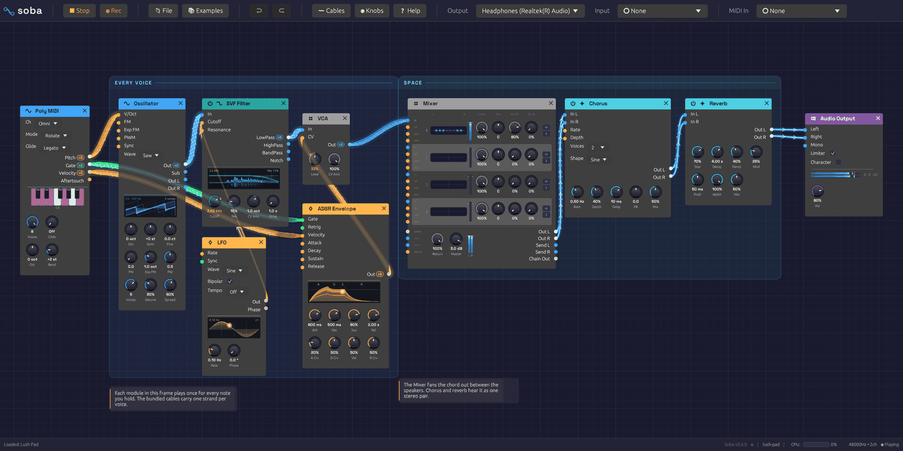
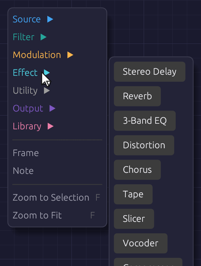
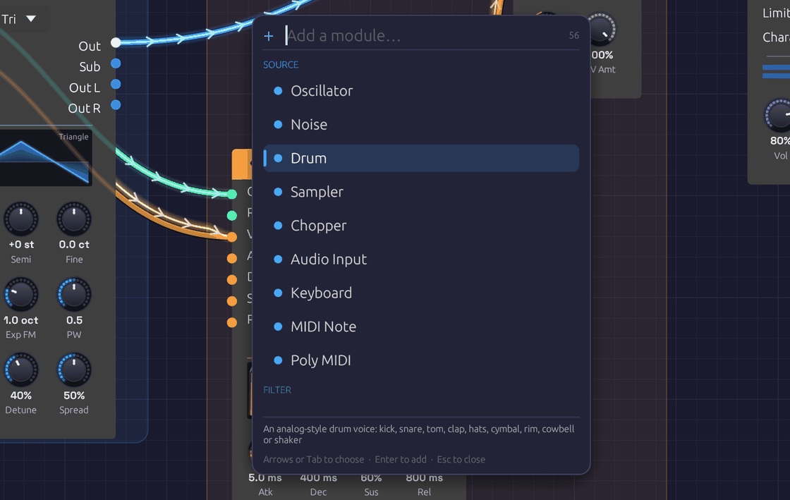
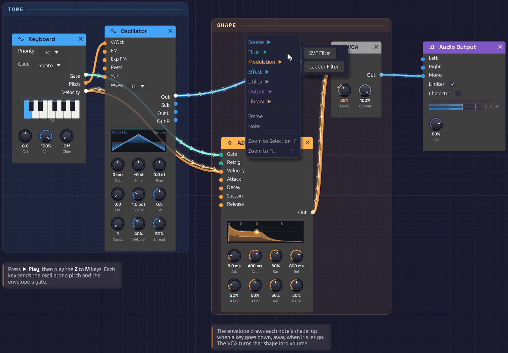

Interface Overview
The Soba window has three parts: a toolbar along the top, the canvas where you build patches, and a status bar along the bottom.

The toolbar, the canvas with a patch on it, and the status bar.The toolbar
From left to right:
| Group | Controls |
|---|---|
| Transport | ▶ Play starts the patch; ⏹ Stop stops it. The app opens stopped. ● Rec records what you hear: see Recording. |
| File | 📄 New, 📂 Open, 🕘 Recent, 📚 Examples, 💾 Save, 💾 Save As, 🔗 Share: see Sharing a patch by link, and 🌱 Plant: see Planting it in the garden. At the foot of 📚 Examples, 🌱 Visit the garden opens the Patch Garden in your browser |
| Edit | ↩ Undo and ↪ Redo. Hover either to see which edit it will undo or redo. |
| 〰 Cables | How signal flow is drawn along cables: Chevrons, Dots or Comets. Under modules and labels sets how much of a cable shows through a module, frame title or note it passes behind (5% at first). Patch under a probe sets how far the patch is turned down while you probe a cable |
| ◉ Knobs | How knobs are drawn: LED ring, Hybrid, Arc, Machined or Classic |
| ❓ Help | 📖 Manual opens this manual, and ⌨ Keyboard Shortcuts (F1) lists the shortcuts, and 🎓 Lessons opens the lessons you take inside the app. Check for Updates…, Check for Updates Automatically, and Roll Back after an update: see Updates |
| Output | The audio device to play through |
| Input | The microphone, guitar or line input that Audio Input modules hear. It starts at None: nothing is opened until you choose a device. A filled dot (●) means it's open. |
| MIDI In | The MIDI controllers to listen to, as many at once as are ticked. A filled dot (●) means one is open. At the foot of the menu, Map Mode (Ctrl + L) and the Controller Map: see MIDI Learn. Below them, Teach Your Controller…, Hands Follow Selection (Ctrl + Shift + L) and Show the Controller (Ctrl + H): see Playing with a controller. The Rig… (Ctrl + Shift + H) shows every MIDI input and MIDI Out port at once: see The Rig. |
At the right end, the toolbar shows a CPU meter while the patch plays, the device's sample rate and channel count, and whether the audio engine is running. While an input is open, In shows how much audio is held between the input and output devices, in milliseconds; it turns amber for a moment after a dropout. Hover it for details.
The status bar
The status bar reports what just happened: a file saved, modules pasted, a cable refused and why. When there's nothing to report, it counts the modules and cables in the patch. On the right it names the open patch, with a dot (●) if it has unsaved changes. At the far right is the version, with a small dot after it that lights up blue when a newer version is out: click it to see what's new, or, while it's dark, to check.
If a patch loads with problems (a module this version doesn't know, a cable to a jack that no longer exists), a ⚠ load warning appears on the right. Hover it to read the warnings; click it to dismiss them.
Moving around the canvas
| To | Do this |
|---|---|
| Zoom | Scroll the mouse wheel. A trackpad pinch, or Ctrl and scroll, zooms about the pointer |
| Pan | Drag with the middle mouse button, or hold Ctrl and drag empty canvas |
| On a touch screen | Pinch to zoom; drag empty canvas with one finger, or two, to pan. Hold a finger still on empty canvas for the add menu |
| Bring it all into view | Press F with nothing selected: the view glides to fit the whole patch, frames and notes too (inside a group, everything in it). It comes no closer than life size, and a patch too big to fit at the furthest zoom shows from its top left |
| Zoom to the selection | Press F: the view glides to fit the selected modules, frames and notes, closing in a little past life size on a single module. Shift + F fits everything even with a selection. Both are in the canvas's right-click menu too |
| Select a module | Click it |
| Select several | Drag a box across empty canvas. It also takes in any frames and notes wholly inside it |
| Move modules | Drag a module by its body; a selection moves together |
The background grid moves and zooms with the patch, with a brighter line every five squares.
Adding modules
The add menu
Right-click empty canvas to open the add menu. It lists the six categories in their header colors; hover or click one to see its modules, then click a module to place it where you right-clicked. Hover a module's name to read what it does. Groups you've saved are under My Modules, in rose (see Groups). Below the categories, Frame and Note add a frame or a note.
On a touch screen, hold a finger still on empty canvas for half a second instead. The menu opens with finger-sized rows. Tap a category to see its modules, then tap a module. To read what a module does, rest a finger on it and the footer under the list tells you. If you then lift the finger after a moment, nothing is added. On a phone, a category's modules often have no room beside the menu, so they open in its place, with ‹ Back at the top.

Right-click empty canvas, pick a category, then a module.Quick add
Press Space or Tab with the mouse over the canvas. A search box opens at the cursor, listing every module by category, with your saved groups first under My Modules and the ready-made groups of the Library last. Type a few letters to narrow the list, then press Enter, and the module appears where the box opened. (With a group selected, Tab opens the group instead.) In the browser, the + button on the toolbar opens it too, in the middle of the view: the way in on a phone, which has neither key.

Type a few letters of a module's name or category, then press Enter.The search is forgiving. Letters only need to appear in order, so lfo, svf, dly and s&h all find what you'd expect. Typing a category name (effect, mod) lists that category. Typing a device's name or maker (freak, volca, elektron) offers an Instrument already playing it, Instrument · MicroFreak, or a Kit for a drum machine, with the profiles you've saved among them. Move through the list with the arrow keys or Tab, add the highlighted module with Enter, or close the box with Escape.
Anatomy of a module
Every module has the same layout:
- Header. The module's name and category icon, on a bar in the category's color. Hover the header to read what the module does. The × at the right end deletes the module. Filters and effects also have a power switch at the left end: see Bypass.
- Inputs, down the left edge. Each jack is labeled and colored by the signal it expects.
- Outputs, down the right edge, colored by the signal they send. An output lights up while signal is coming out of it.
- Displays. Many modules draw what they're doing: the oscillator its waveform, the envelope its shape, filters their frequency response, the LFO its wave with a dot riding its phase.
- Knobs, along the bottom, with the current value under each.
Hover any jack's name or knob for a tooltip: what it does, its signal type in the cable's color, and for knobs, its range.
Knobs
| To | Do this |
|---|---|
| Change a value | Drag up or down |
| Make fine adjustments | Hold Shift while dragging |
| Nudge it | Hold Alt and scroll over it, or click it and press the arrow keys |
| Set an exact value | Right-click, type into Value and press Enter: 440, 1.2 kHz, 250 ms, -6 dB, C#3 |
| Return to the default | Double-click, press Home once you've clicked it, or right-click and Reset |
| Map to a MIDI controller | Right-click, then Learn MIDI |
| Let the DAW automate it (in the plugin) | Right-click, then Map to Macro |
A knob's ring lights up in its module's header color. Knobs with a range either side of zero, like Semi and Fine, light outward from the top, so you can see at a glance which way they're set. A small mark stands where zero is, so a knob at zero shows a dark ring with its pointer on the mark.
Some knobs move in whole steps, like the Oscillator's Oct and Semi: they click from one value to the next as you drag.
Knobs with a jack
Many parameters have both a knob and an input jack of the same name. Patch a cable into the jack and the knob sets the center while the incoming signal moves the value around it. Each module page gives the scale.
The knob stays live while the cable is patched, so you can keep moving the center as the signal plays. Its pointer stays where you set it. Once signal arrives, an orange bead on the knob's rim shows where the signal has carried the value, joined to the pointer by a thin orange arc. A faint band behind the bead shows the range the signal has covered over the last second or so, so you can see how deep an LFO swings even when it's too fast to follow. The number under the knob turns orange and reads that carried value. Hover over the knob or drag it and the number goes back to white and shows the center you're setting. Unplug the cable and the knob alone sets the value again.
In a busy patch, hover over a patched knob to find the cable carrying its signal: that cable glows and the rest dim, and its route shows through any module it runs under. It works the other way too. Hover over a cable and the bead on the knob it feeds swells and glows.
Until signal arrives, a small green dot above the knob shows that a cable is patched in.
Cables
Drag from an output to an input to patch a cable; a jack turns white when the cable is close enough to land on it. You can also drag from an input to an output. Cables only connect where the signals make sense: audio and control mix freely, and a gate can drive a control input, but a cable between jacks that can't work won't attach. Bring one near a jack that can't take it and the ring round the jack breaks in two, half in the cable's colour and half in the jack's. Let go there, and the halves spring apart as a small tag beside the jack says why, for example Control cannot connect to Gate; the status bar says it too. Signal Types has the full rules.
- One output can feed many inputs. Each gets the full signal.
- Each input takes one cable. Dropping a new cable onto an occupied input replaces the old one.
- No loops. A cable that would feed a module's output back into its own input, directly or through other modules, is refused, and the tag at the jack and the status bar name the modules round the loop.
- To remove a cable, drag its end off the input jack and let go over empty canvas.
Cables run behind the modules, and behind frame titles and notes, showing faintly through them so a route can still be followed without covering the controls or the words. 〰 Cables ▸ Under modules and labels sets how faintly.
While the patch plays, cables show what their signal has been doing over the last few seconds. Reading the signal in a cable explains what you're seeing.
Probing a cable
To hear what a cable carries on its own, hold Alt over it while the patch plays. You'll hear the LFO before it reaches the filter, or the dry voice before the reverb. A small scope beside the pointer shows the signal's waveform and names the output it comes from. The probe plays on top of the patch at the same fixed level as a Sampler's ▶. It never comes out louder than that. While you probe, the rest of the patch is turned down beneath it: by 20 dB under an audio cable, which all but solos it, and by 6 dB under a control or gate cable, so you can still hear the music the signal moves. 〰 Cables ▸ Patch under a probe sets each amount, from Off to Solo, and Soba remembers them. Neither the probe nor the ducking goes into a recording. The probe fades in, and when you let go of Alt or move off the cable it fades out and the patch comes back up.
- Audio cables play as they are. On a polyphonic cable, all the voices are summed.
- Control cables play as a quiet sine whose pitch follows the value: A3 at 0, two octaves higher at 1, and two octaves lower at -1. You hear an LFO as a siren and a stepped sequence as a tune.
- Gate cables play a soft click each time the gate opens, with a faint tone while it's held, so you can hear how long each gate lasts as well as when it starts.
Probing works on cables inside groups and on cables into a group's jacks, where you hear the module output the cable carries. MIDI cables have no sound to probe.
Editing modules
The module menu
Right-click a module's header or body (anywhere but a knob) to open its menu. Bypass appears only on filters and effects.
| Item | Shortcut | Effect |
|---|---|---|
| Duplicate | Ctrl + D | Copies the module, slightly below and to the right |
| Copy | Ctrl + C | Copies the module to the clipboard |
| Bypass / Switch on | Ctrl + B | Takes a filter or effect out of the signal path, or puts it back |
| Reset to defaults | Returns every knob to its default | |
| Group | Ctrl + G | Collapses the module, or the selection, into a group |
| Record into a new Sampler / Resample into a new Sampler | On a module with audio outputs: a Sampler beside it, patched from it and recording from the next sound. An Audio Input records; the rest resample. Right-clicking an audio output's name does the same for that output. With a Clock in the patch, it also offers a take of 1, 2 or 4 bars, starting on the next bar line and looped | |
| Delete | Delete | Removes the module and its cables |
If the module is part of a selection, the item applies to the whole selection.
Copy, paste and duplicate
Duplicate (Ctrl + D) copies the selected modules a little down and to the right. Cables between them are copied too; cables to the rest of the patch aren't. The copies are selected, so pressing Ctrl + D again makes a row of them.
Copy (Ctrl + C) and Cut (Ctrl + X) put the selected modules on the clipboard. Paste (Ctrl + V) drops them at the mouse cursor, keeping their layout, settings and the cables between them. Pasting again without moving the mouse fans the copies out.
The clipboard holds modules as patch text, so you can paste between two Soba windows, or paste the contents of a whole patch file to add its modules to the current patch. MIDI mappings stay with the original modules.
Bypass
Filters and effects can be bypassed: their audio inputs pass straight to their outputs, as if the module weren't there. Click the power switch at the left of the header, choose Bypass from the module menu, or select modules and press Ctrl + B. A bypassed module's header fades to gray and its controls dim. Switching takes a 20 ms crossfade, so it never clicks, and a bypassed module uses no CPU.
Mutate
Select a module or a group and press Ctrl + M. Each of its knobs moves a small random step, and pressing it again wanders further. Hold it, and the knobs glide out further the longer you hold, from a nudge to a big jump; let go when you like what you hear. It's a way to explore by listening: mutate a Library group until it's yours.
- What moves: every knob of the selected modules, and of every module inside a selected group.
Ctrl + Alt + Mmoves their whole-number knobs, switches and dropdowns too. - What doesn't: a knob a cable drives, the Audio Output, and any knob that sets how loud something is (a level, gain, makeup, drive, feedback or velocity), so a variation is never louder than the patch was. Nor does a port or a channel, which say where a module plays, not how it sounds.
- Hardware: an Instrument's or a Kit's knobs move the device, but not the ones its profile keeps from Mutate. A knob of named values moves by whole steps.
- Keeping one: a strip of chips under the selection holds the knobs as they were and the last eight variations, each drawn as a tick per knob, as high as the knob is turned. Click one to go back to it.
- Undo: each variation, and each click on the strip, is one step.
- Keeping it for good:
Ctrl + Shift + Mkeeps the knobs as they stand in the next free scene of a Scenes module: the one in the selection's group, or the patch's.
Frames and notes
A patch can explain itself. A frame is a titled, tinted backdrop behind a group of modules, like a section printed on a synth's front panel: Voice, Modulation, Echoes. A note is a card of text on the canvas. Neither makes a sound. Every example patch uses them, so you can read how it works while you play it.

Two frames and two notes. Right-click a frame's title to rename or recolor it.Frames
- To frame some modules, select them and press
Ctrl + Shift + F, or right-click empty canvas and choose Frame. The frame is drawn around the selection and takes the color most of its modules share. Type its name and pressEnter. - To add an empty frame, right-click empty canvas with nothing selected and choose Frame.
- To move a frame, drag its title. Every module and note inside it moves with it, along with any smaller frame inside it. Its body lets clicks through to the canvas, so you can still add modules inside it or drag a selection box across it.
- To resize it, drag any edge or corner.
- To rename it, double-click its title.
- To change its color, right-click its title and pick a swatch. The same menu can Select modules inside it, or Delete frame. Deleting a frame leaves its modules where they are.
Notes
- To add a note, right-click empty canvas, choose Note, and type. Click away or press
Escapewhen you're done. A note left empty disappears. - To edit it, double-click it. Plain text, with
**bold**for emphasis. - To move it, drag it. To change where its lines wrap, drag its right edge.
Selecting, copying and undoing
Click a frame's title or a note to select it, and Shift-click to add to the selection. Delete, Ctrl + C, Ctrl + X, Ctrl + D and Ctrl + V work on selected frames and notes along with any selected modules, so a framed section copies and pastes as a whole. Undo covers adding, moving, resizing, renaming, recoloring, editing and deleting them; typing a frame's name or a note is one step.
Frames and notes are saved with the patch. Versions of Soba from before frames and notes existed open the patch without them.
Groups
A group collapses modules into one node of your own, with jacks where cables crossed into it and the controls you choose on its face. Groups has the whole story; in short:
- Group: select modules and press
Ctrl + G, then type a name and pressEnter. - Go inside: double-click the group, select it and press
Tab, or click the miniature on its face. A trail at the top of the canvas shows where you are; click it, or pressEscape, to go back out. - Pin a control: inside the group, right-click a knob, dropdown or toggle and choose Show on group.
- Add a jack: inside the group, right-click a port's name and choose Show on group. Right-click a jack to rename it, move it up or down, or remove it.
- Rename: select the group and press
F2, or right-click it and choose Rename. - Ungroup: select the group and press
Ctrl + Alt + G. - Keep it: right-click the group and choose Save to My Modules. It's then in the add menu and quick-add palette of every patch.
A group's right-click menu also has Open, Duplicate, Copy and Delete.
Undo and redo
Undo (Ctrl + Z) and Redo (Ctrl + Shift + Z or Ctrl + Y) cover adding, deleting, moving and bypassing modules, patching and unpatching cables, turning knobs, grouping and ungrouping, adding, renaming, moving and removing a group's jacks, and every change to frames and notes. Hover the toolbar buttons to see which edit is next, such as Move Oscillator, Set SVF Filter Cutoff or Move frame Voice.
A whole drag is one step: turning a knob from 200 Hz to 2 kHz and back undoes in one go. A deleted module comes back with its settings, its cables and its MIDI mappings. Knobs moved by a MIDI controller aren't recorded, and opening a patch starts a fresh history.
Playing
Transport
Nothing sounds until you press ▶ Play (or Shift + Space, which also stops it). ⏹ Stop silences the patch, lets the last of the signal drain out of the cables, and clears echoes and reverb tails, so they don't resume when you play again.
The computer keyboard
The bottom row of letter keys plays like a piano, starting from C4 (middle C), with the sharps on the row above it. The top row and the numbers above it are a second piano, an octave higher, as in a tracker:
| Keys | Notes |
|---|---|
Z X C V B N M | C D E F G A B |
, . / | C D E, an octave up |
S D G H J | C♯ D♯ F♯ G♯ A♯ |
L ; | C♯ D♯, an octave up |
Q W E R T Y U | C D E F G A B, an octave up |
I O P | C D E, two octaves up |
2 3 5 6 7 | C♯ D♯ F♯ G♯ A♯, an octave up |
9 0 | C♯ D♯, two octaves up |
The two pianos overlap: , . / play the same notes as Q W E.
The keys play every Note In module in the patch (unless its Source is MIDI), with or without a MIDI controller, in the browser and inside a DAW as well; use its Oct knob to shift it up or down. A Note In with more than one voice plays chords from them. How hard they play is set by its Key Vel knob, MIDI velocity 100 by default. Keys typed into the quick-add box, or held with Ctrl or Alt, don't play notes. While a Chord Sequencer's chord popover is open, the keys write chords into it instead.
MIDI
Tick your controller in the toolbar's MIDI In menu; Soba doesn't connect to one until you do. Tick more to play several at once, up to eight. If the controller isn't listed, plug it in and click 🔄 Refresh at the bottom of the menu. Untick a device to close it, or choose None (Disconnect) to close them all. Soba remembers what's ticked: next launch it opens the same controllers, and if you plug one in after Soba starts it connects within a couple of seconds (unticking one, or choosing None, makes it forget). Closing a device releases the notes held on it. If a controller can't be opened, the reason appears in the status bar.
In the browser, MIDI In starts as a 🎹 Connect MIDI button. A web page may use MIDI only once you allow it, so click it and your browser asks; Firefox first offers a small add-on for the site that allows it. Then the menu lists your controllers, and a controller you plug in later appears by itself, with no Refresh needed. Allowing it lets MIDI Out play your devices too. If you said no, allow MIDI in the site settings (the icon to the left of the address) and click Connect MIDI again. Chrome, Edge and Firefox have MIDI; Safari doesn't, and the button says so.
Two modules listen to the controller: Note In, for one voice or chords, and MIDI Monitor to see what's arriving. With several devices open, each of them hears them all, until you give it a Device in its right-click menu: see Listening to one device. A mapping learned while several devices are open answers only the device it was learned from.
MIDI Learn
Any knob, toggle or dropdown can follow a control on your MIDI controller: a knob, a fader, a pad or a key. So can the Looper's footswitches, the Sampler's Rec and the pads of Scenes.
- Right-click it and choose Learn MIDI. A purple badge blinks on it, and the status bar asks you to move something.
- Turn a knob, move a fader, or hit a pad on your controller.
The badge stops blinking and stays. Right-click again to see what it's mapped to (CC 74 · ch 1, or C2 · ch 10 for a pad), to Re-learn MIDI, or to Clear MIDI. Mappings are saved with the patch, and playing them isn't added to the undo history.
What a control does depends on what it's mapped to:
| Mapped to | A knob or fader (a CC) | A pad or key (a note) |
|---|---|---|
| A knob | turns it across its range | holds it at the top while held |
| A toggle | switches it on from halfway up | flips it on each hit |
| A dropdown | sweeps through the choices | steps to the next choice, and round |
| A footswitch or Rec | presses it from halfway up | presses it while held |
| A Scenes pad | recalls the scene from halfway up | recalls the scene |
Faders that don't jump. A fader or knob with ends doesn't yank the knob it's mapped to. Until you move the hardware past where the knob stands, a purple tick on the knob's rim shows where the hardware is, with a faint arc back to the knob, so you can see which way to go. Once the hardware reaches the knob it picks it up, the tick fades, and the knob follows. Turn the knob with the mouse, recall a scene or undo, and it waits to be picked up again. To have it jump instead, untick Pick up in its right-click menu.
Endless encoders. Many controllers have knobs that turn forever and send steps rather than a position. Soba listens to the first few values after you learn one and tells it apart from a fader, so the knob steps from wherever it stands, a hundred steps end to end, and one number at a time on a whole-number knob. If it guesses wrong, choose under Hardware in the knob's right-click menu. Invert turns any mapping upside down.
A controller turns a knob the way the mouse does: a fader sweeps a frequency by octaves, so the middle of its throw is in the middle of what you hear.
To patch a fader or a wheel into a cable, rather than turn one knob with it, use a Controls module: its slots learn the same way. To play drums or fire triggers from a controller's pads, use Pad modules, one a pad (the Library's Pads ×8 is eight), whose notes a Note In on Omni then leaves alone.
A mapping listens on the MIDI channel it was learned on, so the keys and the pads of one controller can send the same note numbers without mixing up. (Mappings made before Soba learned channels still listen on all of them.)
To back out before moving anything, press Escape, or right-click the blinking control and choose Cancel MIDI Learn. Choosing Learn MIDI on a different control moves learn mode there instead.
Map Mode
To map a whole controller, turn on Map Mode: press Ctrl + L, or choose Map Mode at the foot of the MIDI In menu. A thin purple line runs round the canvas, and every control that can be learned wears a soft purple outline: knobs, toggles, dropdowns, footswitches, Rec and the Scenes pads. The ones already mapped keep their badges.
Now a click on a control doesn't turn, flip or press it. It starts MIDI Learn on it instead, and its outline breathes while it waits. Move a knob or fader or hit a pad on your controller, and the control is mapped. Map Mode stays on, so click the next control and move the next thing, and so on down the controller: eight encoders, four faders and eight pads are twenty clicks and twenty moves, and no menus. Clicking another control before you move anything moves the learn there. The status bar says what Map Mode is waiting for, and what was mapped last.
Right-click still opens a control's menu in Map Mode, to clear a mapping or change its hardware. Press Escape or Ctrl + L again to leave.
The Controller Map
Choose Controller Map… at the foot of the MIDI In menu to see every mapping in the patch on one panel, in the order you made them. Each row is one mapping:
| Column | What it shows |
|---|---|
| Source | What turns it: CC 74 · ch 1, C2 · ch 10 for a pad, or Macro 3 in a DAW |
| Module and Control | The module, and the knob, switch or Scenes pad it turns |
| Range | The two ends a knob or fader sweeps the knob between, typed in the knob's own units (200 Hz, 8 kHz, 40%). Press Enter to set one. They stay inside the knob's own range |
| Hardware | Knob or fader, or one of the two kinds of Encoder, as under Hardware in the knob's menu |
| Pick up | A knob or fader waits to pick the knob up rather than jumping it |
| Invert | The hardware's top is the control's bottom |
The cross at the end of a row clears that mapping. Hover a row and its control lights up on the canvas, so you can find which knob it is. Changes here are changes to the patch: they're saved with it, and the patch shows it has unsaved changes until you save. A DAW macro's range and style are the DAW's, so its row only lists it. Map Mode has a button at the foot of the panel too, so you can keep mapping with the map open.
Playing with a controller
The Hands On example puts all of this to work on an Arturia MiniLab 3.
Mapping is for a patch you've finished. While you're building one, you want the encoders under your hand to be the knobs of whatever you're working on: click an oscillator and they turn its knobs, click a filter and they turn the filter's. That's Hands Follow Selection.
Teach Soba your controller first. You do this once per controller. Choose Teach Your Controller… in the MIDI In menu, and the status bar walks you through it. With several devices open, it teaches the one whose encoder you turn first, and keeps what it learns under that device's name. The hands then stay on the controller you taught last, for as long as it's open:
- "Turn encoder 1 a few clicks". Turn the first encoder a few clicks in one direction, at any speed. The status bar says what it heard (
Encoder 1 is CC 74 · ch 1, endless) and asks for the next one. Go on until you've turned them all, then pressEnter(or Done). - "Move fader 1". Move each fader in turn, then press
Enter(or Done) again.
Soba learns as many encoders and faders as your controller has, and either can be none. A MiniLab 3 is eight encoders and four faders, a nanoKONTROL eight and eight, a Launch Control XL twenty-four and eight, and a BeatStep sixteen encoders and no faders: press Done straight away when it asks for fader 1. To pass over one in the middle, press Tab (or Skip): the knob it would turn is left free, so the rest stay where they are on the hardware. Escape gives up and keeps what Soba knew before. A controller taught before Soba learned any number keeps its eight encoders and four faders.
Turning slowly lets Soba tell an endless encoder, which sends steps, from a knob with ends, which sends where it is. Soba keeps what it learned under the controller's name, not in the patch, so it's there for every patch, and each controller you teach is remembered separately.
Then turn on Hands Follow Selection in the MIDI In menu, or press Ctrl + Shift + L. Teaching turns it on for you. While it's on:
- The encoders turn the selected module's first knobs, in the order its face shows them, and the faders turn the knobs after: on a MiniLab, the first eight and the next four.
- Select a group and they turn the knobs pinned to its face instead. With several modules selected, they turn the first one's.
- The knobs they turn wear small numbered purple badges,
1,2and on for the encoders andF1,F2and on for the faders. The badges fade in each time you select something else. - Endless encoders step the knob from wherever it stands. Faders, and knobs with ends, pick the knob up as mapped ones do: a tick on the rim shows where the fader is until it reaches the knob.
- The patch's own mappings on the taught encoders and faders pause, and their badges dim. Turn Hands Follow Selection off and they come back. Mappings on the controller's other controls, its pads and keys, carry on as before.
- As with mappings, turning a knob this way isn't added to the undo history.
Map Mode and MIDI Learn come first. While either is on, the encoders don't follow the selection, so you can map them in the usual way.
Seeing what each control does
On stage it's hard to remember which fader does what in this patch. Choose Show the Controller in the MIDI In menu, or press Ctrl + H, and a small sketch of your controller appears along the foot of the canvas. It has the encoders and faders you taught, with the same numbered purple badges as the knobs they turn, and a row of pads when the patch maps any. Up to sixteen encoders sit in two rows, as a MiniLab's eight do; more go in rows of eight, as do the faders. Beside each control is what it does right now: the knob's name, and under it the module's name in the module's colour. A control that does nothing stays faint and says what it sends (CC 74), so you can find the free ones.
-
What it shows follows what the controller does. While Hands Follow Selection is on, the encoders and faders show the selected module's knobs, and the sketch says which module they follow. Otherwise they show the patch's own mappings on the encoders and faders you taught.
-
The pads are the patch's Pads, lowest note first, each saying what its gate is patched into (Kick over Drum). After them come the patch's mappings to notes, the Looper's footswitches and the Scenes pads, lowest note first (Rec over Looper). A pad lights while you hold it.
-
It moves as the hardware does. An encoder's pointer and a fader's cap sit where the knob they turn is, a control brightens as its message arrives, and a fader that hasn't picked its knob up yet shows a purple tick where the fader is. Endless encoders are drawn with a knurled rim.
-
If you haven't taught Soba your controller, the sketch lays the patch's mappings on eight encoders and four faders in the order you made them, and offers Teach Your Controller…. While you teach it, the sketch grows a control at a time, and the one Soba waits for breathes purple.
-
Mappings that don't fit, or are on controls Soba wasn't taught, are counted at the left, with a link to the Controller Map.
The sketch keeps its size as you zoom, stays clear of the status bar, and only takes the clicks that land on it. Hover a control to see what it sends. Soba remembers whether it's shown.
The Rig
With a room of hardware plugged in, choose The Rig… at the foot of the MIDI In menu, or press Ctrl + Shift + H. It shows every MIDI device Soba can hear or play on one panel.
-
MIDI In has a row for each input found, and for each one Soba remembers that isn't plugged in. Each row has:
- a lamp: green while the input is open, flashing as it's heard; amber while it's unplugged;
- a tick to open or close it, as in the menu. An unplugged one has a ✕ instead, to forget it;
- its slot (In 1 to In 8);
- the last message heard, as the MIDI Monitor writes it. It's bright when it arrives and fades to grey over a few seconds;
- how many modules have their Device set to it alone. Hover to see their names.
An input a route comes from also has a thru chip by its name. Click it to make the input Thru only: it stays open and its routes pass as before, but the patch doesn't hear it. Modules set to any device, MIDI Learn, mappings learned from any device, the MIDI Monitor and the pianos all pass it by. A module whose Device names it still hears it, since naming it is asking for it. While it's Thru only, the chip is lit, the name steps back, and the row reads routes only where the modules would be. It's for a keyboard that's only there to play your hardware. Click the chip again to let the patch hear it.
-
MIDI Out has a row for each of the eight ports, A to H, that a MIDI Out plays. Each row has:
- the port's device, which you choose here or on a MIDI Out's face. Its menu can also 📤 Send a SysEx file… to it: see Sending SysEx;
- its Clock: what it sends of the patch's Clock. Clock + Transport sends the tempo with Start and Stop, Clock only the tempo alone, and Off nothing. The port sends it whether or not a MIDI Out plays it. While its device leads the Clock (see Leading or following), it reads leads in purple and sends nothing;
- its Offset: how many milliseconds later than the sound its notes, CCs and clock go out, to line a slow device up with the rest. Drag it, or click to type. It's amber when it asks for earlier than your audio device's delay allows;
- beside the offset, a ping (•)) to measure the device's delay and set the offset for you: see Measuring a device's delay;
- its Budget: how many messages a second it may send. No limit suits a USB device. A 5-pin DIN cable carries only about a thousand, so set DIN · 1000/s for a port that plays through a MIDI interface, or Gentle · 500/s for gear that falls behind at full speed. Over its budget, a port sends only the newest value of each CC, bend and pressure, and notes, programs and clock go on time;
- how the port is doing: Sending, Full (in amber, while its budget is thinning CCs), Ready (it has a device but nothing plays it), Unplugged, No device, or In use (another app has the device);
- a dot that lights on each beat while clock goes out;
- the last message sent. After SysEx it reads SysEx · 163 B, and while a long dump is still going out, how much is left (SysEx · 2.4 KB to go);
- how many MIDI Outs play the port.
-
Thru has a row for each route. A route passes what one MIDI In plays straight to one port, past the patch, so with everything plugged into the computer, the computer is your patch bay: the Fantom's keys play the MicroFreak, or the Tracker drives the Volcas, while the patch does something else. Click + Route to add one. Each row has:
- a lamp that flashes as the route passes something, and a tick to set the route aside without losing it;
- From, the MIDI In it hears, and To, the port it plays. The input must be open (ticked under MIDI In) for Soba to hear anything to pass;
- Channel, the channel it passes (All, or one), and Becomes, the channel they go out on (Same, or all moved to one). Pass channel 1 and make it channel 10 to play a drum machine from any keyboard;
- what it passes: Notes, CC, Bend (pitch bend and pressure), Clock (clock, Start, Stop and Song Position) and Prog (program changes). Click one to turn it on or off. A new route passes everything but clock, since a keyboard's clock and the port's own Clock together would run the device at double time;
- what it's doing: Thru, Open input (click to open it), No input, No device, Unplugged or Loop;
- a ✕ to take it away. Notes it was holding are let go.
A route goes out the moment it comes in, ahead of anything else on the thread that sends MIDI, without waiting for the audio or for the port's Offset: it's for playing, and adds well under a millisecond. A route that would play the device it comes from is refused and says Loop, since a device that echoes what it hears would feed back forever; the To menu won't offer that port. The patch still hears an open input: a Note In set to any device plays along. To keep them apart, make the input Thru only with the chip by its name under MIDI In. Up to sixteen routes.
Ports, with their clocks, offsets and budgets, routes, and inputs are settings of this computer, not of the patch. 🔄 Refresh looks for devices again at once. Otherwise Soba looks every couple of seconds.
Sending SysEx. Some things only SysEx can do: give a Volca FM a DX7 voice, load a bank of 32, or set a device's settings that have no CC. Open a port's device menu, choose 📤 Send a SysEx file… and pick a .syx file. Every message in it goes to that port's device whole and in order, and a line under the ports says how many went. A port with a Budget paces a long dump to it, since some devices drop SysEx that comes faster than their cable carries: a bank of 32 DX7 voices (4,104 bytes) takes about 1.4 seconds at DIN · 1000/s. The notes and clock keep their time meanwhile, and CCs wait for the dump.
In the browser, the first file you send asks for one more permission, since SysEx can rewrite a device's sounds and settings: the browser asks to let Soba "control and reprogram your MIDI devices". Allow it, then send the file again. Notes and CCs never need it.
After a reboot. Windows numbers devices that share a name in the order they were plugged in (2- Digitakt), and numbers a device's extra ports (MIDIIN3 (FANTOM-06)). Linux adds the device's client and port numbers to its name. Those numbers can change when you reboot or plug things in a different order. Soba finds a device by its exact name first, then by its name without those numbers, so every port and input finds its device again. A module whose Device is set to it, or a mapping learned from it, still hears it. If two devices are left that both fit, Soba uses neither, rather than guess. Hover a port's device to see whether it was found under a new number.
Measuring a device's delay
Every device takes its own time to turn a note into sound. With its audio plugged into your interface and open as the Input in the toolbar, Soba can time it for you:
- Click the ping (•)) beside a port's Offset. A line opens under the port.
- Choose the channel and note to ping, and which of the input's channels the device comes back on (In 1+2, In 3, and so on: a pair is heard as one). A sound with a sharp attack measures best: a kick, a rim shot or a pluck, on the channel of the track or part that plays it.
- Click Measure. Soba plays the note eight times, a little over half a second apart, and listens for each one. With the transport stopped it first waits a couple of seconds for the input to settle; while it plays, it starts at once. Quieten anything else the port plays while it listens.
Soba then says how long the device took, from the note leaving to its sound, and how close together the eight answers were. It takes away the part of the trip that's Soba's and your interface's: the output's delay and the port's offset before the note leaves, and the input's delay and buffer once the sound is back. A strip draws the pings one over another from the note, that part shaded grey and the device's own in purple, with a green line where its sound begins.
It also says where the device lands now against Soba's sound, and offers Set Offset: the offset that lines it up. A device slower than your audio device's delay can't be caught up all the way, since a message can't leave before its sound is made; the offer goes as early as it can, and says so. A larger buffer gives more room.
It gives up rather than guess when too few pings come back clear of the noise, when they come back too far apart to trust, or when the input stalls or settles while it listens. One ping that lands far off (a stray sound) is left out. Only one port is measured at a time, and closing the Rig stops a measurement.
How exact it is depends on how well the interface reports its own delays: an ASIO driver reports them to the sample. Windows' shared audio doesn't report the input's, so Soba takes it as the least it can be and says so; the device may then be a little quicker than measured.
Recording
When something good happens (a filter sweep you rode by hand, a lucky generative passage, an improvisation on a MIDI keyboard), press ● Rec or Ctrl + R to keep it. If the patch is stopped, Rec starts it.
While recording, the button turns red, with a slowly pulsing light and the length of the take so far. Press it again, press Ctrl + R, or press ⏹ Stop to end the take. A note pops up in the corner with the take's name and length, and 📂 Show in folder opens it in your file manager.
- What's recorded: exactly what you hear, after the output limiter, sample for sample. It's a 32-bit float WAV at your audio device's sample rate and channel count.
- Where it goes:
Music/Soba, named after the patch and the minute you pressed Rec, such asFirst Sound 2026-10-08 14-03.wav. To use another folder, right-click ● Rec and choose Change…; Open Folder opens it. - The patch comes too. Every take is saved with the patch beside it, as a
.jsonwith the same name, so you can always open the patch that made a recording. It's saved when the take ends, so knobs you rode during the take are saved where you left them. - Edit freely. Turning knobs, patching cables, even opening another patch: the recording keeps going through all of it.
- Switching the Output device ends the take cleanly. Closing the window while recording asks first, and then saves the take.
Recording runs alongside the audio, never in its way. If your disk ever falls more than two seconds behind, the missing audio is skipped rather than allowed to cause a glitch, and the note tells you how much was lost.
Patches
Patches are saved as .json files holding every module, setting, cable and MIDI mapping.
| Action | Shortcut |
|---|---|
| New | Ctrl + N |
| Open | Ctrl + O |
| Save | Ctrl + S |
| Save As | Ctrl + Shift + S |
Examples
The 📚 Examples menu holds ready-made patches on two shelves. Recipes has First Sound, which opens when the app starts, and a patch for each recipe in this manual, each built around one idea. Songs has whole pieces that play themselves from start to end, each with a page of its own. Hover an example to read what it is. Each one is laid out in frames, with notes on how it works and what to try. Saving an example always asks for a file name, so you save a copy and the original stays intact.
Samples
A Sampler keeps the path to its sound file in the patch. A file beside or below the patch is saved by a path relative to it, so the patch's folder can be moved or shared whole. Save As copies samples from anywhere else into a <patch name> samples folder beside the patch, asking first if they come to more than 50 MB. A patch whose sample has gone missing still opens, with the missing file among the load warnings.
A Looper's loop is kept the same way. Saving the patch writes each loop that changed as a WAV into a <patch name> loops folder beside it, asking first if they come to more than 50 MB, and opening the patch brings each loop back, stopped and ready to play. A loop whose file has gone missing is a load warning, and its Looper opens empty. See Keeping the loop.
Sharing a patch by link
🔗 Share copies a link to the patch you have open, short enough for a chat, a slide or a QR code: https://soba.chaps.dev/s/fdb945uF. Whoever opens it gets the patch in their browser, in Soba's web version, with nothing to install: the same modules, cables, knobs, frames and notes, stopped until they press ▶ Play. What they change stays with them.
To keep the link short, the patch is kept on soba.chaps.dev, where anyone with the link can open it. Sharing the same patch again gives the same link. If you'd rather nothing were kept, press Copy the long link instead in the note that says the link was copied. The long link holds the whole patch itself, after the #, so it's never sent to a server, and it works offline. When the link service can't be reached, Share copies the long link anyway, and says so.
A link carries the patch and the samples that come with Soba's examples, and nothing else. If a Sampler plays a file of your own, Share says which files, and offers Save As instead, to send the patch as a folder with its samples (in the browser, Save downloads it as a zip with them).
Long links come to a few thousand characters for most patches. The biggest songs come to 30,000 or so, which some chat apps cut short; email or a document carries them whole. Pasting a Soba link of either kind onto the canvas opens it too, asking first if there are unsaved changes.
Planting it in the garden
The Patch Garden is a page of patches people have planted, each drawn as its own cable diagram, to hear and open. 🌱 Plant, beside Share, puts the patch you have open there. Give it a title (40 characters at most) and, if you like, your name, which is remembered for next time, and press 🌱 Plant or Enter.
Sharing keeps a patch behind a link; planting publishes it. A shared patch can only be found by someone you send its link to. A planted one is listed in the garden for anyone to hear, open and grow their own from. A new plant appears once it's been approved, and the note that says it's planted gives its short link, which plays it right away. Planting the same patch again changes nothing: it keeps its first title.
If you opened the patch from a short link, the garden remembers which, and shows your patch as a branch growing from that one. Change something first: the very patch you were sent is already that link. A patch that plays files of your own can't be planted, as it can't be shared, and Soba offers Save As instead. When the garden is busy or can't be reached, a quiet note says so and goes away by itself; nothing has changed, so plant it again in a while.
Recent patches
🕘 Recent lists the last eight patches you opened or saved, newest first. Hover one to see where it lives. A file that has since been moved or deleted is grayed out. Clear Recent empties the list.
Unsaved changes
While a patch has unsaved changes, the window title starts with a dot (● Lush Pad · Soba), and so does its name in the status bar. Undoing back to the saved state clears the dot. Recording into a Looper counts as a change too.
New, Open, opening an example or a recent file, and closing the window all ask first when there are unsaved changes:
- Save saves the patch (asking where, if it has never been saved), then carries on. Cancelling the save dialog cancels the whole thing.
- Don't Save (Quit Without Saving, when closing) carries on and lets the changes go.
- Cancel, or
Escape, goes back to the patch.
Closing the window while a recording is running asks too, even with nothing unsaved, and the prompt shows how long the take is. Quitting stops the take and saves it before the window closes.
Autosave and recovery
Every 30 seconds, a patch with unsaved changes is autosaved alongside the app's settings. Saving the patch, or choosing Quit Without Saving, clears the autosave, so one only survives if Soba closes without asking: after a crash or a forced quit.
The next time the app starts, it offers the patch back. Recover reopens it exactly as it was at the last autosave, still marked unsaved; Discard lets it go. At most, you lose the last 30 seconds of work. An autosave doesn't keep Loopers' loops, though: they come back as last saved with the patch, and the prompt says so.
Recent files, the autosave, your cable style and the window's size and position are kept in the settings file:
- Windows:
%APPDATA%\Soba\data\app.ron - macOS:
~/Library/Application Support/Soba/app.ron - Linux:
~/.local/share/soba/app.ron
Keyboard shortcuts
Help ▸ Keyboard Shortcuts, or F1, shows these in the app too, with the letter keys drawn as the piano they play.
On a Mac, hold ⌘ Command where these say Ctrl, and Option for Alt. The app writes them that way there.
Canvas
| Shortcut | Action |
|---|---|
Space or Tab | Quick add a module at the cursor |
F | Zoom to the selection, or with nothing selected, to fit the whole patch |
Shift + F | Zoom to fit the whole patch |
F1 | Show or hide the Keyboard Shortcuts window |
Escape | Close the add menu, quick-add box or Keyboard Shortcuts window, cancel MIDI Learn or leave Map Mode, finish typing a frame's name or a note, or go back out of a group |
Editing
| Shortcut | Action |
|---|---|
Delete or Backspace | Delete the selected modules, frames and notes |
Ctrl + D | Duplicate the selected modules, frames and notes |
Ctrl + C / Ctrl + X | Copy / cut the selected modules, frames and notes |
Ctrl + V | Paste at the cursor |
Ctrl + Shift + F | Frame the selected modules |
Ctrl + B | Bypass or switch on the selected filters and effects |
Ctrl + Z | Undo |
Ctrl + Shift + Z or Ctrl + Y | Redo |
Knobs
| Shortcut | Action |
|---|---|
Shift + drag | Fine knob adjustment |
| Double-click a knob | Reset it to its default |
Alt + scroll over a knob | Turn it, finely with Shift held too |
| Click a knob, then the arrow keys | Nudge it: Shift finer, Page Up and Page Down further, Home to its default |
Ctrl + M | Mutate the selected modules' knobs: hold it to go further |
Ctrl + Alt + M | Mutate their switches and dropdowns too |
Ctrl + Shift + M | Keep the knobs as the next free scene of a Scenes module |
Groups
| Shortcut | Action |
|---|---|
Ctrl + G | Group the selected modules |
Ctrl + Alt + G | Ungroup the selected group |
Tab | Open the selected group |
F2 | Rename the selected group |
File
| Shortcut | Action |
|---|---|
Ctrl + N | New patch |
Ctrl + O | Open a patch |
Ctrl + S | Save |
Ctrl + Shift + S | Save as |
Playing
| Shortcut | Action |
|---|---|
Shift + Space | Play or stop the patch |
Ctrl + R | Record, or end the take |
Ctrl + L | Map Mode: click controls one after another to map them to MIDI |
Ctrl + Shift + L | The controller's encoders and faders follow the selection, or let go |
Ctrl + H | Show or hide the sketch of the controller, saying what each control does |
Ctrl + Shift + H | The Rig: every MIDI input and MIDI Out port, the device each plays, and the thru routes between them |
Alt over a cable | Hear what the cable carries |
The letter keys play notes: see The computer keyboard.
Presenting
While a presentation script plays (Help → Lessons → Present…), a beat at a time. A clicker sends Page Down and Page Up. The keys go to the presentation only while the canvas has them: a knob you've clicked keeps its arrows until you click the canvas.
| Shortcut | Action |
|---|---|
Page Down or → | Presenting: play the next beat |
Shift + Page Down or Shift + → | Presenting: finish the beat now, as it would have ended |
Page Up or ← | Presenting: play the beat again, or the one before if it's only just begun |
Escape | Stop presenting |
A MIDI footswitch steps the beats too, once the script names its CC before the first beat: advance cc 64, back cc 65 or finish cc 66, with a channel after the number if it's on only one. Set the pedal to momentary: each press counts once. While you present, nothing else hears that CC. No module, mapping, MIDI Learn or thru route gets it, so a sustain pedal on CC 64 doesn't hold any notes.
Each run is kept as a take, a capture script with every beat's cues at the moment it played. It's written as each beat begins and when you stop, to a new file in a takes folder beside the script, or to the file --take take.txt names. Save take… in the notes window writes a copy anywhere. Then soba patch.json --capture take.txt films the same run frame by frame, in time with the narration you recorded live. A beat you played again keeps only its last go, so the film holds still where you went back. Knobs you turn and the view you move by hand aren't in the take.